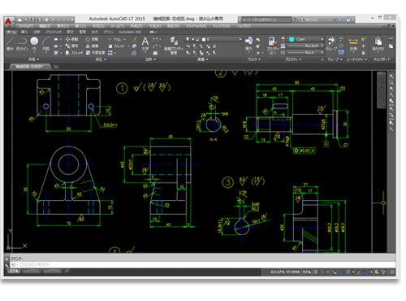
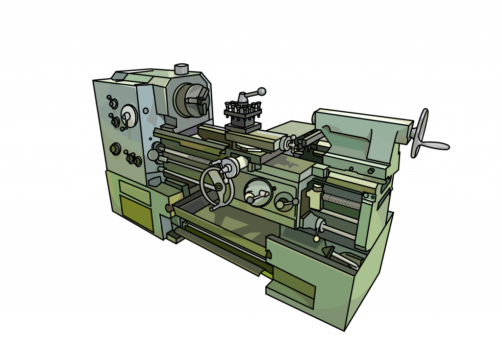

どうも、3M-05 稲葉有煌です。
何と言っても ［機械］ 日本男児全ての憧れです。
それは過言だとしても、やはり一番の魅力はそこでしょう
かく言う私もそこに惹かれました。
そこでここでは、Mコースに関して
を 私の主観のみで後述させていただきます。
図法等を理解したうえで、用紙への製図や
3DCADを用いた製図が主に印象に残っています。
高専生であれば、有料のCADソフトが無料で使えるため
講義内のみならず、自主学習にも活かすことができます。
ですが、やはり"専門的で難しいんじゃないか"
"自分にわかるのか"と座学には不安がつきものだと思います。
得手不得手も関与しますが、実際私は製図等は大の苦手でしたね
ですが、それらを完璧にマスターする必要があるかと言われると
そうではありません。無論、単位のため成績は必要になりますが
高専卒業後、それらをどこまで使うことになるかが関係してきます
というのも、高専卒業生の話をいくつか聞く限り、それらを駆使する
ことはほとんどないとおっしゃる方が大多数を占めます。
しかし、決して座学が無駄というわけではなく
就職先や進学先によって、求められるものが異なることを
念頭に置いたうえで、座学で思いつめすぎる必要はないと私は考えます。
皆さん一番気になるところだと思います
今現在私が取り組んでいるのは空気エンジンの加工、分解、組み立てです。
旋盤やボール盤、フライス盤等の大型機械を駆使して、加工材の穴あけや切削加工を行う。
また、タップややすり等小さな道具で表面や内部の形を整える加工をも行う。
～～盤といっても、わからない人のほうが多数を占めると思われますので、下部に代表的な
旋盤の参考画像を添付しておきます。
やはり機械を扱うとなると、危険が常に伴い、それなりな緊張感があります。
しかし、それを加味しても機械による金属加工には、ほかにはない楽しさがあり、
完成時には無類の達成感を感じられます。
感想に個人差はあれど、これが高専を象徴するものであり、
Mコース唯一無二の長所であることには変わらないだろう。
あくまで私個人の意見であることご理解いただいたうえでご閲覧下さい。
勿論、機械について興味関心がある人には最適だと思います。
その他にも、Mコースは他のコースと比べて、取っ付きやすい印象があります
Iコースは最もスキルが求められ、弱肉強食を強制されるため、真にプログラミング等に関心を持つ人である必要があります。
Eコースは小さな基板を精密に扱う必要があり、手先の器用さが求められる印象がある
Dコースにはアイデア性が求められ、比較的才能の面が強いように感じた
これらに比べて、Mコースは能力がいらないとまではいわないが、講義内にて完結している印象がある
そのため、明確な関心や目標が定まっていない学生にも、お勧めできる。
実際、楽観的な人が多いように感じ、高専の中でも最も普通科高校に雰囲気が似ているのではないだろうか
このページが入学や選択の手助けになれば幸いです。
ご閲覧ありがとうございました！